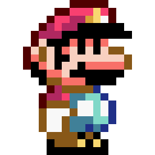
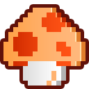

- links of rechts klikken op gamepad: Mario 20px naar links of rechts laten bewegen met een animatie
- A klikken op gamepad: eerst Mario dubbel zo groot maken, daarna de paddestoel laten verdwijnen. Zorg dat Mario op de grond blijft staan en niet wegzakt in de aarde!
- B klikken op gamepad: mario 3 keer laten knipperen (aan-uit-aan-uit-aan-uit-aan)
- Omhoog klikken op gamepad: mario laten springen
- Omlaag klikken op gamepad: mario kleiner laten worden. Zorg dat Mario op de grond blijft staan